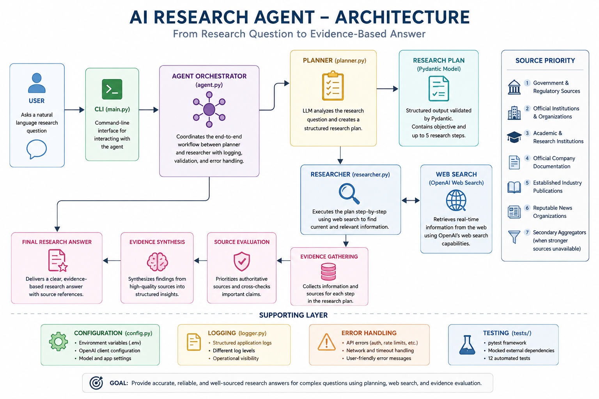

PROJECT #01 · COMPLETE
AI Research Agent
A research-focused AI agent that creates structured research plans, searches the web, evaluates source quality, and produces evidence-based answers.
THE PROBLEM
Why I built this.
A normal chatbot can answer questions, but research-focused tasks require more than generating text from model knowledge.
I wanted to build a system that could first understand a research request, break it into manageable research steps, gather current external information, evaluate evidence, and then synthesize the findings.
How can an LLM evolve from simply answering questions into an agent that plans research, uses tools, validates evidence, and produces reliable research outputs?
THE SOLUTION
Planner → Researcher architecture.
1. Research Planner
The planner receives the user's research question and creates a structured research plan.
The output is validated using a Pydantic schema instead of relying on unrestricted free-form text.
2. Research Executor
The researcher receives the validated plan and uses web search to gather current external evidence.
It follows source-quality rules and synthesizes the findings into a final research answer.
ARCHITECTURE
How the system works.

User
↓
CLI
↓
Agent Orchestrator
↓
Planner
↓
Structured ResearchPlan
↓
Researcher
↓
Web Search
↓
Evidence Evaluation
↓
Final Research Answer
CORE FEATURES
What the agent can do.
Structured Planning
Converts a research request into a validated research objective and ordered research steps.
Real-Time Web Research
Uses web search to gather current external information instead of depending only on model memory.
Source Prioritization
Prefers government, regulatory, official, academic, and reputable research sources.
Structured Output
Uses Pydantic models so planner output can be reliably consumed by the researcher.
Error Handling
Handles authentication failures, rate limits, timeouts, network failures, and bad requests.
Automated Testing
Includes 12 pytest tests using mocked external dependencies to avoid unnecessary API calls.
DEVELOPMENT JOURNEY
Built from first principles.
Rule-Based Logic
Started with simple Python conditions and deterministic routing.
LLM Integration
Replaced hard-coded decision logic with model-based reasoning.
Tool Calling
Learned how LLMs request custom tools and how Python executes them.
Agent Loop
Added web search, tool-result handling, and iterative execution.
Planning Agent
Separated research planning from research execution.
Production Engineering
Added modular architecture, Pydantic, logging, error handling, testing, and evidence guardrails.
TESTING
12 automated tests passing.
python -m pytest -v
12 passed in 1.15sENGINEERING CHALLENGES
Problems I had to solve.
Repeated Tool Calls
The agent initially called the same calculator tool repeatedly because execution state was not being preserved correctly.
Over-Planning
Early planners created consulting-style plans involving interviews and multi-week work. Prompts were refined so plans remained executable by the agent.
Excessive Responses
Simple research questions initially produced unnecessarily large reports. Response depth was adjusted to match query complexity.
API Failures
Added targeted exception handling for invalid credentials, rate limits, timeouts, network issues, and malformed requests.
WHAT I LEARNED
More than just prompting an LLM.
How LLM tool/function calling works under the hood.
How to build an iterative agent execution loop.
How planning and execution can be separated into different components.
How structured outputs improve reliability between AI components.
Why logging, validation, error handling, and automated tests matter in AI applications.
LIMITATIONS
Current project scope.
This agent is intentionally optimized for research-intensive tasks rather than low-latency general conversation.
- Web research can increase latency and token usage.
- Public web sources can contain conflicting or incorrect information.
- The current interface is command-line based.
- The project does not currently persist research history.
- It is not designed for high-stakes professional advice.
SOURCE CODE
Explore the complete project.
The repository includes the final modular application, automated tests, learning notes, and earlier versions showing how the agent evolved from V1 to V9.
View on GitHub